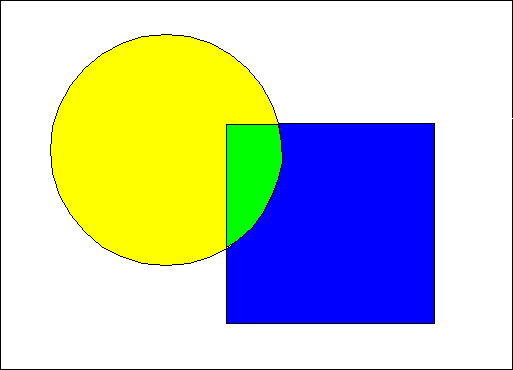

The FM_XOR attribute enables objects to be drawn in such a way that they can be removed easily by simply drawing them a second time using the FM_XOR attribute. The FM_XOR attribute is available on display devices only and is useful for graphics animation when an application must move an individual graphic and completely restore the graphics that it originally overlapped. Typically, an application would do the following:
For retained graphics, this sequence can be automated to some extent by defining specific graphics segments as dynamic. Dynamic graphics always are drawn using the FM_XOR attribute, regardless of the current mix attributes.
The effects of the FM_XOR attribute are shown in the following figure.
Exclusive-OR (XOR) Mix Attribute
The circle is drawn on top of the square. At the points of overlap, graphics are not drawn if the two overlapping figures are an identical color.
When using the BM_XOR attribute, the background of the primitive is merged with the existing picture according to the same rules that apply to the FM_XOR attribute.